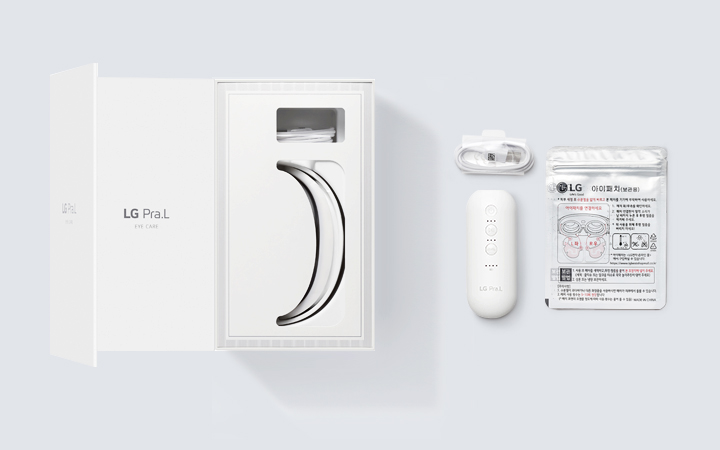
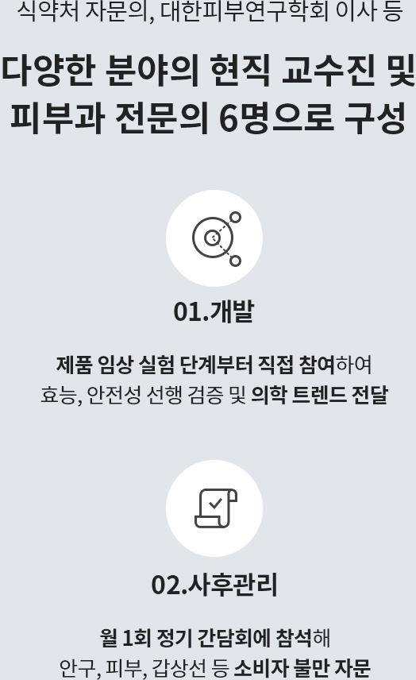

LG Pra.L
아이케어 EWN1
- 특징
- 효능/효과
- 사용법
- 안전성
- 구성품
혹시 알고 계셨나요?
베이직모드 : 1단계 100㎂, 2단계 100~150㎂, 3단계 100~200㎂
마일드모드 : 1단계 80~100㎂, 2단계 80~150㎂, 3단계 80~200㎂
아이패치 없이 사용할 경우 LED 모드는 사용이 가능합니다
한국 광기술원 시험성적서 / 2020년 7월 20일
프라엘 아이케어
간편 사용법
혼자서도 OK
쉽고 편리한 기능
주 3회, LED 베이직 모드, 3단계 미세전류 세기 사용 시
사용 시간은 배터리 보증기간, 주변 온도 또는 사용 조건에 따라 달라질 수 있습니다
주 3회 사용을 권장합니다

LED 빛을 99% 이상 차단하는 이중 안전 기능
임상시험을 통해 피부 안구 부작용 최소화
식약처 공식 시험기관 KTL / 2020년 9월 21일 기준
아이패치와 함께 사용 / 2020.05.11 ~ 07.10 / 성인 여성 26명 / 글로벌의학연구센터(GMRC)
한국 광기술원 시험성적서 / 2020년 7월 20일
사용 시 빛 유입을 막아주는 아이쉴드(눈 보호 가이드)가 적용되어 있으나 사용자에 따라 일부 빛 유입이 발생하기도 하므로 가급적 눈을 감고 사용하시는 것을 권장합니다
구성품

아이패치는 베스트샵 온라인몰에서 추가 구입 가능합니다 (6세트 1박스)
아이패치 구매하기
내 피부 타입 확인하기
프라엘 피부 과학 자문단
효과적인 홈케어를 위해 효능과 함께 안전하게 사용할 수 있도록 초기 제품 개발부터 사후 관리까지 의료 자문단과 함께 합니다 피부 자문단 자세히 보기-

- 박경찬 교수
- 대한피부학회 이사
-

- 김범준 교수
- 피부 노화 및 질환 전문의
-

- 김원석 교수
- 대한의학레이저학회
학술 이사
-
- 허창훈 교수
- 탈모 두피 질환 전문의
-

- 노미령 교수
- 피부 노화 및
모발 질환 전문의
-

- 윤성재 교수
- 대한피부항노화학회
학술 이사
